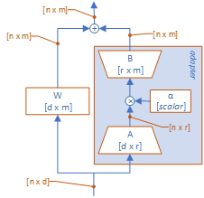
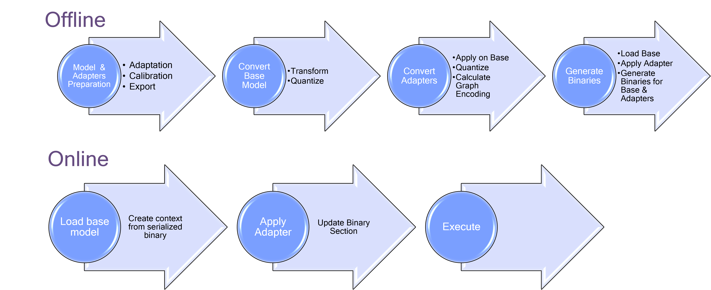
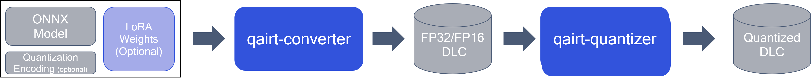
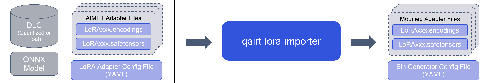
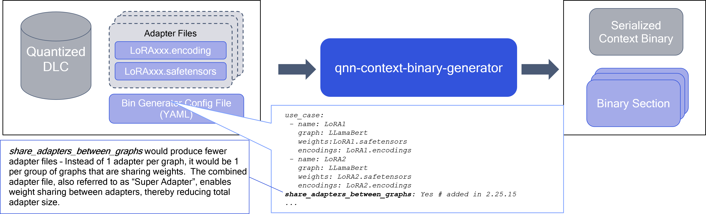
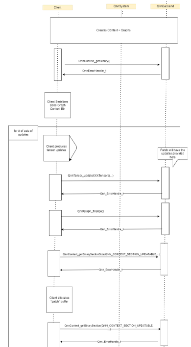
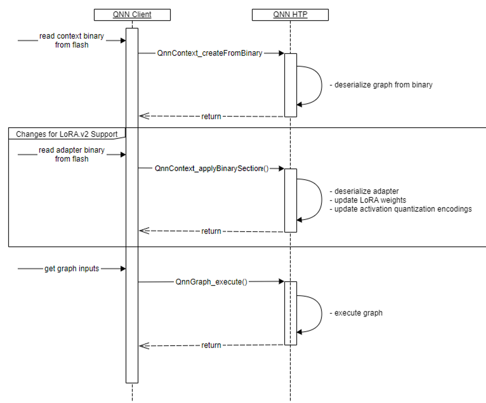
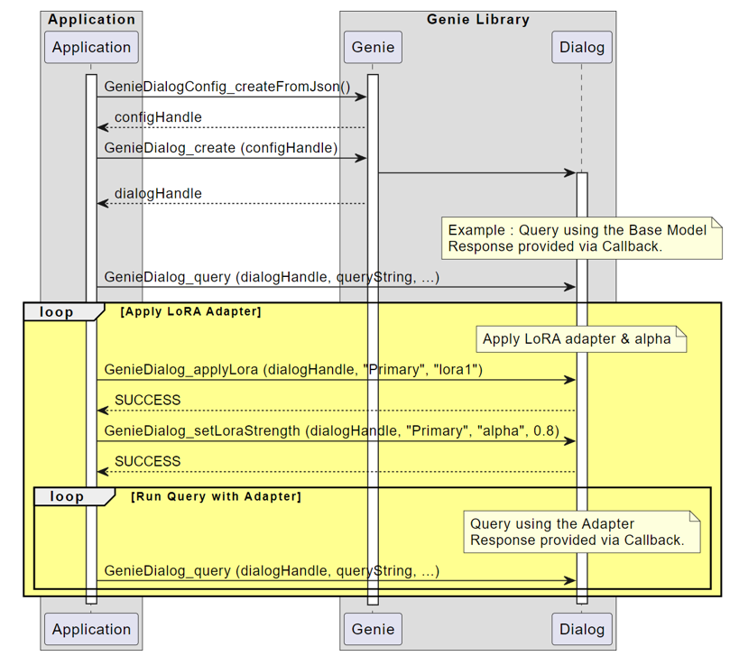
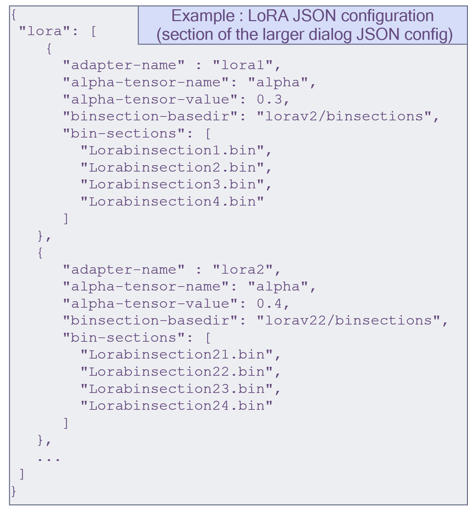

LoRA v2¶
Overview¶
{kind=link}

Adapter Requirements¶
PEFT-based Adapters (PEFT = Parameter-Efficient Fine-Tuning)
All Adapters to a given base graph:
Have same architecture and attachment points
Have the same max rank and same precision
Supported Functionality¶
Currently supported for ONNX models and HTP backend only
Apply a single adapter at a given time (e.g single branch)
Dynamic switching of adapter (e.g. without loading/unloading of base model)
Regain accuracy on Quantization by creating tailored encodings per adapter during offline conversion
Adapter weights are quantized, and each weight has its own encodings
Activation encodings for each adapter are different and optimized during calibration process
Requires full offline preparation of both Base Model & Adapters, with Quantization done by AIMET
Offline preparation only supported on: Linux x86 host platforms, Windows
Disclaimer: Both base model context binary and adapter binary files MUST be prepared using same QAIRT SDK version.
Apply adapter supported on these targets: Android, Windows on Snapdragon
High-Level end-to-end workflow¶
{kind=link}

Notes :
For switching adapters, “Apply adapter” can be done as needed between calls to execute
Setting Alpha is done by updating the relevant input tensor
{kind=link}
Offline Flow : Conversion¶
Convert the Base Model¶
Same Converter/Quantizer for LoRA and non-LoRA usages
Converter has a new “–lora_weight_list” parameter to pass LoRA Weights Names, to identify as “updatable tensors” in the graph
{kind=link}

Import the LoRA Adapters via. qairt-lora-importer¶
Note: This feature is currently supported only for ONNX models
{kind=link}

What is the format of “LoRA Weights Names” provided to qairt-converter tool with –lora_weight_list option?
A text file contains LoRA adapter weight tensor names with newline as delimiter
Refer to the below sample code that generates a text file with LoRA adapter weight tensor names from LoRA adapter .safetensors file
from safetensors.numpy import load_file
def save_tensor_names(safetensor_path, save_path="./tensor_names.txt"):
tensor_name_to_data_map = load_file(safetensor_path)
with open(save_path, 'w') as text_file:
for tensorAtt_name in tensor_name_to_data_map:
text_file.write(tensor_name + '\n')
Offline Flow: Generating Binaries¶
qnn-context-binary-generatoris extended to support Applying of LoRA weights :Receive a new “–adapter_weight_config” parameter to receive Adapters YAML config file (produced by
qairt-lora-importertool)Generate a “binary section” file for each LoRA adapter
The produced “binary section” file is used on-target with new QNN API to apply the LoRA adapter
Notice: The QAIRT SDK version that generates the base graph context binary and the adapter binary file MUST be the same.
{kind=link}

Offline Flow: Generating LoRA binary sections with QNN API¶

As shown on previous page,
qnn-context-binary-generatortool is extended to produce LoRA binary sections (also referred to as adapters)This page explains how do apply the adapter weights and retrieve the binary sections directly using QNN API (not via QNN tools)
This is done in the following manner:
Create the QNN Context & Graphs (either from-scratch or from a Binary)
In case the Context/Graph was created from scratch, call
QnnContext_getBinaryto receive a binary blob of the unmodified QNN context.
Call New QNN API :
QnnTensor_updateGraphTensors/QnnTensor_updateContextTensorsTensors must be of
UPDATEABLEtype, created during graph composition (in step 1.)
Call
QnnGraph_finalize(important! Updates are not applied until finalize is called)Call
QnnContext_getBinarySectionSizeto receive the size of the binary sectionA buffer with a suitable size should be allocated and passed to QNN backend as part of the next API call
Call
QnnContext_getBinarySectionto receive a binary blob containing the LoRA update
Steps 2-4 can be done multiple times, each time apply a different adapter (by updating the weights) and retrieve a suitable binary section
Online Flow : QNN Call Flow¶
{kind=link}

At the end of the offline flow, users will have a serialized context binary file (for base model) , and a set of binary section files (for LoRA Adapters)
To apply LoRA Adapter on-target, user needs to use new QNN API:
QnnContext_applyBinarySectionThe on-target flow is as follows
Create Context by calling
QnnContext_createFromBinary(as usual)Apply the adapter by calling
QnnContext_applyBinarySection(new)Update I/O tensors using adapter binary compatible quantization encodings
Get adequately quantized inputs and call
QnnGraph_execute(as always)
Updating quantization encodings of I/O tensors
For quantized models, quantization encodings of input/output tensors can change when LoRA adapter gets applied
Client can retrieve quantization encodings from adapter binary by calling
QnnSystem_getBinaryInfoon it.Client must check/update quantization encodings of I/O tensors after new adapter was applied
Back to running with base graph only (after any adapter is applied)
Option a - Set Alpha to 0
Option b - Create one adapter which has all zero Lora weights. Switch to this adapter. A default adapter is generated from the
qnn-context-binary-generatorwith suffix default_adapter
Online Flow : Genie LoRA API¶
Genie library provides high-level Dialog API for Generative AI transformer models
Dialog API is extended to include applying a LoRA adapter and setting the strength (alpha)

{kind=link}

LoRA + Graph switch Implementation¶
Graph switching can now be used with LoRA to reduce RAM usage by trading off slight token rate hit
As per QNN SDK doc, to enable graph switch, user needs to set context config options as
QNN_CONTEXT_CONFIG_MEMORY_LIMIT_HINT: non-zero valueQNN_CONTEXT_CONFIG_PERSISTENT_BINARY: trueIf user uses
qnn-net-runorqnn-throughput-net-run, this can be done by setting config options accordingly in backend extension config file.:memory_limit_hint: non-zero valueis_persistent_binary: trueThe adapter buffer should be kept persistent (like context binary buffer) for graph switching
During QnnContext_applyBinarySection, if the graph is in an unloaded state, HTP Backend deserializes the graph, then applies the adapter.
During QnnGraph_execute, if the graph is in an unloaded state, HTP backend loads the unloaded graph and then reapplies last applied adapter from the persistent buffer.
Note: When the Lora Weight Sharing feature is enabled, the graph will not be in an executable state immediately after deserialization. You must call QnnContext_applyBinarySection at least once for any graph before invoking QnnGraph_execute.